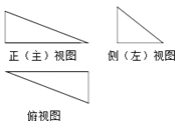
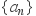
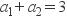
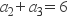
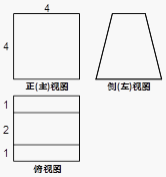
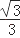
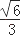
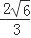
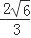
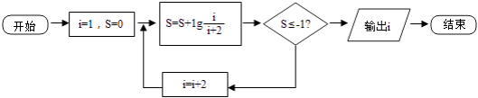

2017年3月6日高中数学试卷
一、单选题（共10题；共50分）
1、集合，集合，则（ ）
A、 B、 C、 D、
2、已知复数， 则的共轭复数等于( )
A、 B、 C、 D、
3、已知一个三棱锥的三视图如图所示，
其中三个视图都是直角三角形，则在该
三棱锥的四个面中，直角三角形的个数为（ ）
A、1 B、2 C、3 D、4
4、设向量与向量共线，则实数（ ）
A、2 B、3 C、4 D、6
5、已知等比数列中， ， ， 则（ ）
A、64 B、128 C、256 D、512
6、一个空间几何体的三视图如图所示，
则该几何体的表面积为（ ）
A、48 B、
C、 D、80
7、设是直线， 是两个不同的平面，则（ ）
是两个不同的平面，则（ ）
A、若,,则 B、若，,则
C、若 ,,则 D、若
,,则 D、若 ，,则
，,则
8、半径为1的球面上的四点A，B，C，D是一个正四面体的顶点，则这个正四面体的棱长是（ ）
A、 B、 C、 D、
D、
9、某公司2005～2010年的年利润x（单位：百万元）与年广告支出y（单位：百万元）的统计资料如表所示：
年份 | 2005 | 2006 | 2007 | 2008 | 2009 | 2010 |
利润x | 12.2 | 14.6 | 16 | 18 | 20.4 | 22.3 |
支出y | 0.62 | 0.74 | 0.81 | 0.89 | 1 | 1.11 |
根据统计资料，则（ ）
A、利润中位数是16，x与y有正线性相关关系
B、利润中位数是18，x与y有负线性相关关系
C、利润中位数是17，x与y有正线性相关关系
D、利润中位数是17，x与y有负线性相关关系
10、（2014•江西）阅读如图程序框图，运行相应的程序，则程序运行后输出的结果为（ ）

A、7 B、9 C、10 D、11
二、填空题（共2题；共10分）
11、某校高一年级有900名学生，其中女生400名，按男女比例用分层抽样的方法，从该年级学生中抽取一个容量为45的样本，则应抽取的男生人数为________ ．
12、统计的基本思想是：________ ．